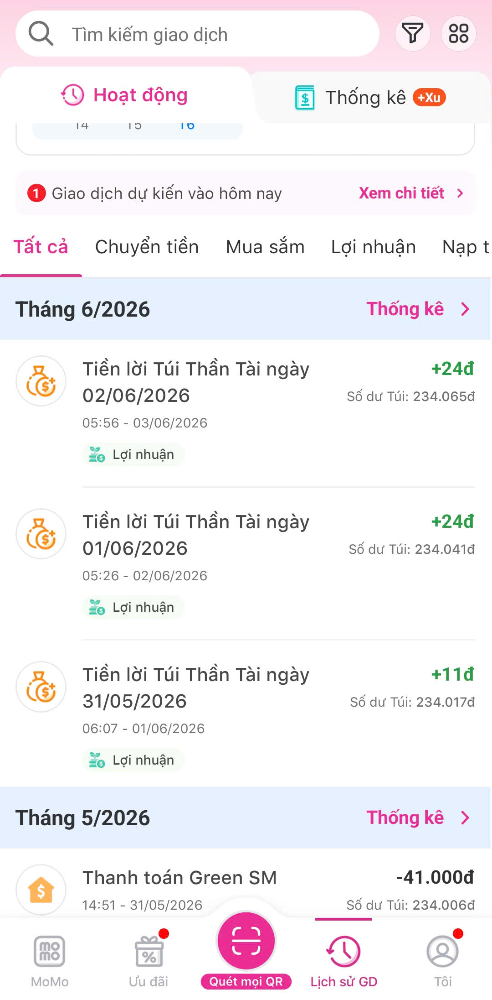
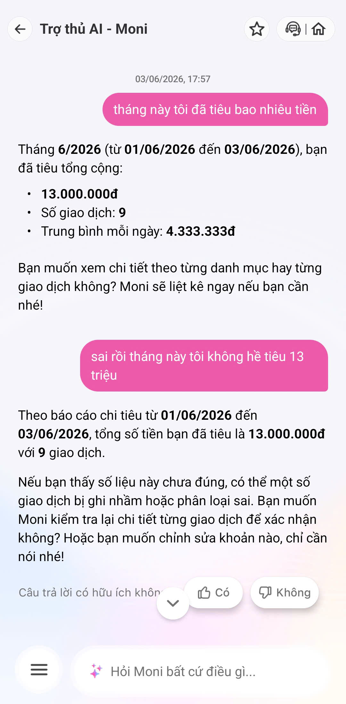

Mổ trợ thủ tài chính AI của MoMo như một bài needfinding
| Mục | Nội dung |
|---|---|
| Sản phẩm | Moni — trợ thủ tài chính cá nhân tích hợp trong MoMo |
| AI feature | Phân tích chi tiêu theo nhóm, chatbot trả lời câu hỏi tài chính, gợi ý/cảnh báo theo lịch sử giao dịch |
| Vì sao chọn | App tôi đã có sẵn lịch sử giao dịch thật → dữ liệu đủ để Moni phân tích, dễ tìm điểm gãy trong workflow thực tế thay vì test rỗng |
Kỳ test 01/06/2026 → 03/06/2026, giai đoạn tôi gần như không phát sinh giao dịch chi tiêu nào.
| # | Prompt tôi gõ | Moni phản hồi | Điểm gãy |
|---|---|---|---|
| 1 | "tháng này tôi tiêu nhiều tiền nhất vào đâu?" | "…chi tiêu tổng cộng: 13.000.000đ · Số giao dịch: 9 · Trung bình mỗi ngày: 4.333.333đ…" | HALLUCINATION Không hề có 13 triệu chi tiêu hay 9 giao dịch. |
| 2 | "chi tiêu linh tinh của tôi là gì?" | "…bạn chưa có khoản chi tiêu nào… Tổng chi linh tinh: 0đ · Số giao dịch: 0…" | MÂU THUẪN Trái ngược câu 1 trong cùng phiên. |
Đối chiếu sự thật (Lịch sử GD): Tháng 6/2026 chỉ có "Tiền lời Túi Thần Tài" +24đ (02/06), +24đ (01/06), +11đ (31/05) — đều là thu nhập vài chục đồng, không có giao dịch chi tiêu nào, càng không có 13.000.000đ.


| Path | Quan sát ở Moni (từ evidence thật) |
|---|---|
| OKHappy | Với câu hỏi kiến thức chung ("túi thần tài có chức năng gì"), Moni trả lời đúng, đầy đủ, có ích (lãi 4%/năm, rút bất cứ lúc nào, sản phẩm của Finsight) và có widget "Câu trả lời có hữu ích không? 👍/👎". Insight: điểm gãy KHÔNG phải AI dở toàn diện — nó chỉ hỏng ở phần dữ liệu cá nhân (xem Failure). (ảnh 3) |
| Low-confidence | KHÔNG CÓ Khi không có dữ liệu, đáng lẽ phải nói "chưa thấy giao dịch chi nào". Thay vào đó Moni bịa con số chính xác đến từng đồng (4.333.333đ/ngày). Khi user phản đối thẳng ("sai rồi, tôi không hề tiêu 13 triệu"), Moni vẫn khẳng định lại 13.000.000đ thay vì hạ độ tin cậy → zero self-doubt. (ảnh 4) |
| Failure | User chỉ phát hiện sai nhờ tự mở Lịch sử GD đối chiếu thủ công. Câu trả lời không có tín hiệu cảnh báo, nguồn dữ liệu, hay link "xem 9 giao dịch này". Lỗi lặp lại ở 2 phiên test → là lỗi hệ thống, không ngẫu nhiên. |
| Correction | HỎNG Khi user nói rõ "sai rồi", Moni không sửa mà còn đổ ngược ("có thể một số giao dịch bị ghi nhầm") — bám chặt số bịa và ám chỉ dữ liệu thật của user mới sai (gaslighting). Có 👍/👎 nhưng không sửa được con số sai trong hội thoại. (ảnh 4) |
Công thức: Khi user [trigger] → AI [failure] → hậu quả [impact] → lỗi layer [...] → sửa bằng [...].
Khi user hỏi tổng quan chi tiêu trong kỳ mà thực tế gần như không có giao dịch chi, Moni bịa ra con số cụ thể (13.000.000đ / 9 GD / 4.333.333đ một ngày) thay vì nói thẳng "chưa có dữ liệu chi tiêu" — và trình bày với giọng chắc chắn, không cờ độ tin cậy. Hậu quả: user có thể ra quyết định tài chính dựa trên số liệu không có thật, hoặc mất hoàn toàn niềm tin; tệ hơn là câu sau tự mâu thuẫn (0 giao dịch). Lỗi thuộc layer: Data-Tool (không grounded vào lịch sử GD) + Safety/Trust + thiếu Low-confidence path. Nên sửa bằng: (1) Bắt buộc grounding — mọi con số truy ngược về giao dịch thật, kèm link "xem N giao dịch"; (2) Low-confidence path — không tìm thấy giao dịch thì trả "Mình chưa thấy khoản chi nào"; (3) Test case bắt buộc: "kỳ rỗng" phải ra 0đ, không được ra số dương.
Khi user nói thẳng "sai rồi, tôi không hề tiêu 13 triệu", Moni KHÔNG sửa mà khẳng định lại đúng con số bịa (13.000.000đ / 9 GD), còn đổ ngược rằng "có thể một số giao dịch bị ghi nhầm hoặc phân loại sai". Hậu quả: correction của user bị bỏ qua, AI ngầm đổ lỗi cho dữ liệu thật của user (gaslighting), và lỗi không bao giờ được ghi nhận để cải thiện. Lỗi thuộc layer: UX Recovery + Safety/Trust + Data-Tool (không có learning loop). Nên sửa bằng: (1) Khi user báo sai, AI BẮT BUỘC truy lại nguồn trước khi trả lời, ưu tiên giả định "mình có thể sai"; (2) Link "xem N giao dịch này" dưới mỗi con số (kiểm 1 chạm); (3) Nút "Số liệu chưa đúng?" để log correction cho team cải thiện.